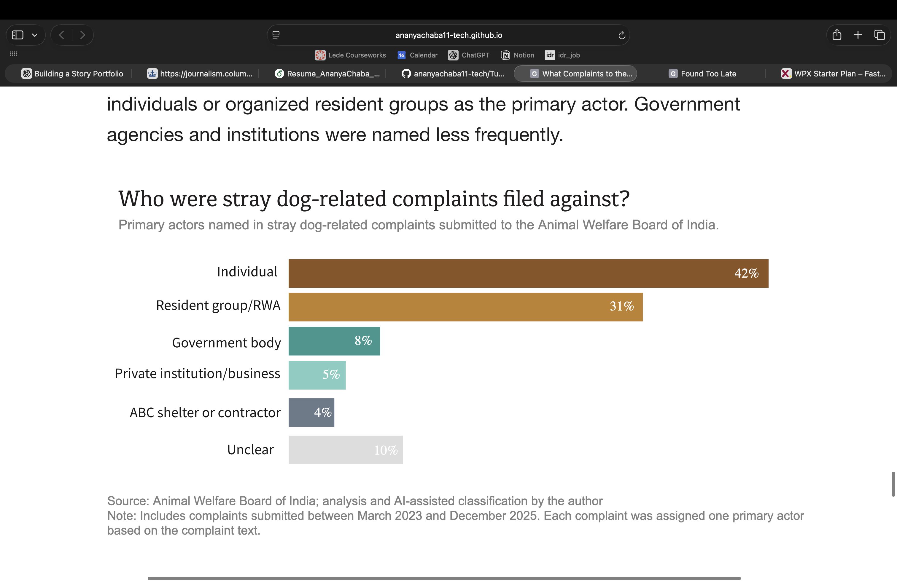
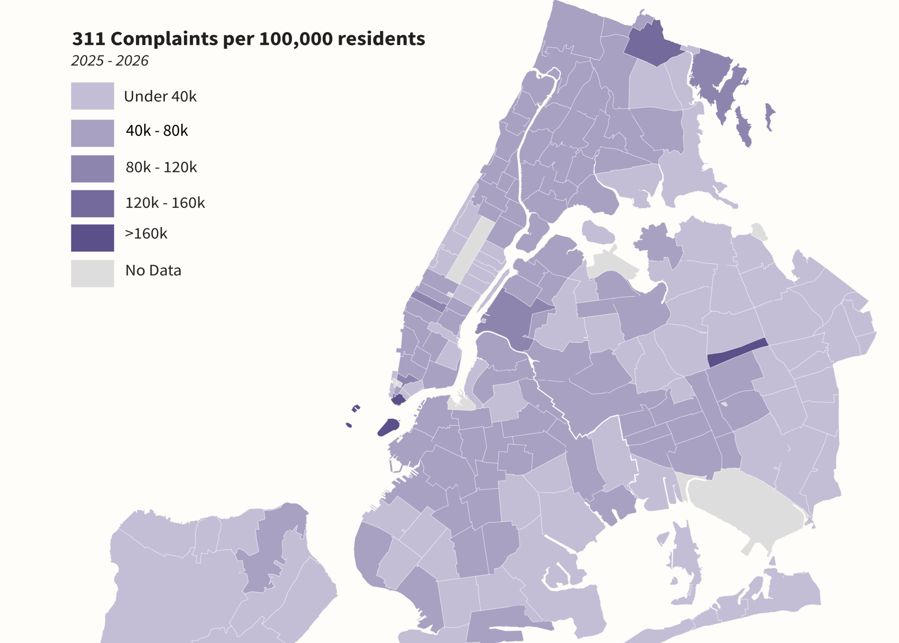
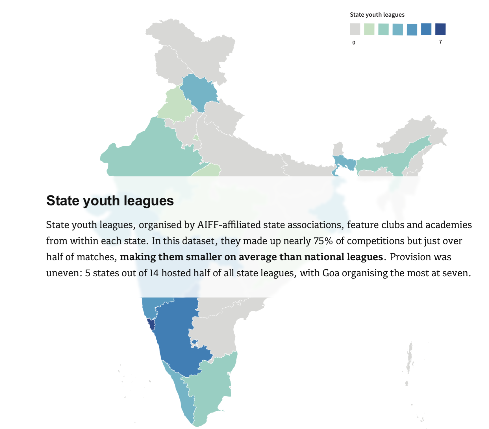

What Complaints to the Animal Welfare Board of India Reveal About the Stray-Dog Conflict
An analysis of nearly 500 stray-dog-related complaints submitted to the Animal Welfare Board of India explores what this administrative record reveals about complaints involving stray dogs.

Found Too Late
India’s TB programme records millions of patients each year. But the journey to diagnosis can be slow, expensive and uneven, allowing the disease to deepen and spread before the system sees it.

How Income Shapes 311 Complaints in New York City
Combining one year of New York City's 311 service requests with income data reveals how complaint rates and the issues residents report vary across the city.

A data-driven investigation into Indian youth football
Using player-level league data to examine whether India’s football governing body is delivering on its ambitions.